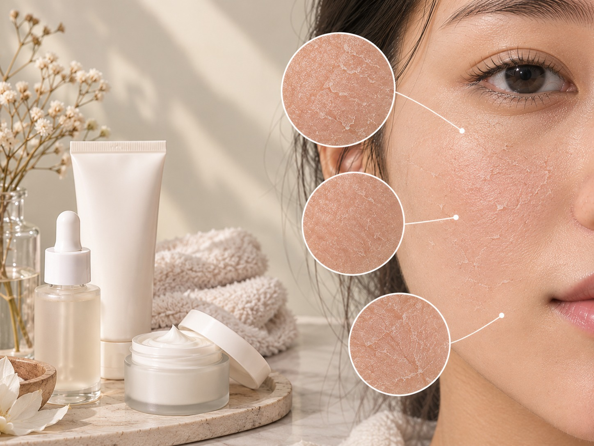

What is Dry Skin?
Dry skin may lack sufficient moisture and can feel tight,
rough, or flaky. It may sometimes feel uncomfortable,
especially after washing.

Common Characteristics
- Skin may feel tight or rough.
- Flaky or peeling patches may appear.
- Skin may look dull.
- Itching or irritation may occur.
- Fine lines may appear more noticeable.
Basic Skincare Routine
- Use a gentle, non-stripping cleanser.
- Apply a moisturizer to help retain moisture.
- Choose a richer cream if your skin needs extra hydration.
- Apply broad-spectrum SPF 30 or higher sunscreen daily.
Ingredients to Know
-
Hyaluronic Acid:
Helps the skin retain moisture.
-
Ceramides:
Help support the skin's natural protective barrier.
-
Glycerin:
Attracts water and helps keep the skin hydrated.
Precautions
- Avoid harsh soaps and cleansers.
- Avoid very hot water when washing your face.
- Do not scrub flaky skin harshly.
- Apply moisturizer regularly.
- Use sunscreen daily.
- Introduce new skincare products carefully.
Note:
Everyone's skin is different. These characteristics are
general guidelines, not a medical diagnosis.
If dryness is severe or persistent, consider consulting a dermatologist.